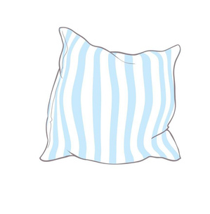
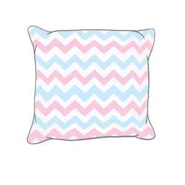
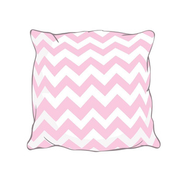
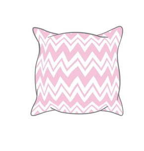

<div class="all">
  <div class="card-body">
    <h5 class="card-title">
      Выбери подушку, а мы скажем, сколько времени тебе нужно, чтобы высыпаться
    </h5>
    <p class="card-text">
      Считается, что 8 часов — это идеальное количество времени для того, чтобы
      высыпаться. Однако наши организмы индивидуальны, поэтому эта цифра очень
      приблизительна. Путем экспериментов ты сама должна понять, сколько часов
      тебе нужно для здорового и эффективного отдыха. Это может быть 5 часов, 7
      и даже все 10. Или, возможно, тебе подходит интервальный сон, который
      практиковал Леонардо да Винчи? Он спал по 15-20 минут каждые четыре часа.
      То есть, всего два часа в день. Ну, а что, это никак не помешало ему быть
      гением. Правда, писал он свои картины по десять лет. Мы, конечно же, не
      будет советовать следовать его примеру — сон менее 6 часов в день
      увеличивает риск смертности в разы. Но его случай — просто один из
      примеров того, что все мы разные
    </p>

    <span class="image_style1">
      
    </span>
    <span class="image_style2">
      
    </span>
    <div>
      <span class="image_style3">
        
      </span>
      <span class="image_style4">
        
      </span>
    </div>
    <div *ngIf="open"></div>
  </div>
</div>
